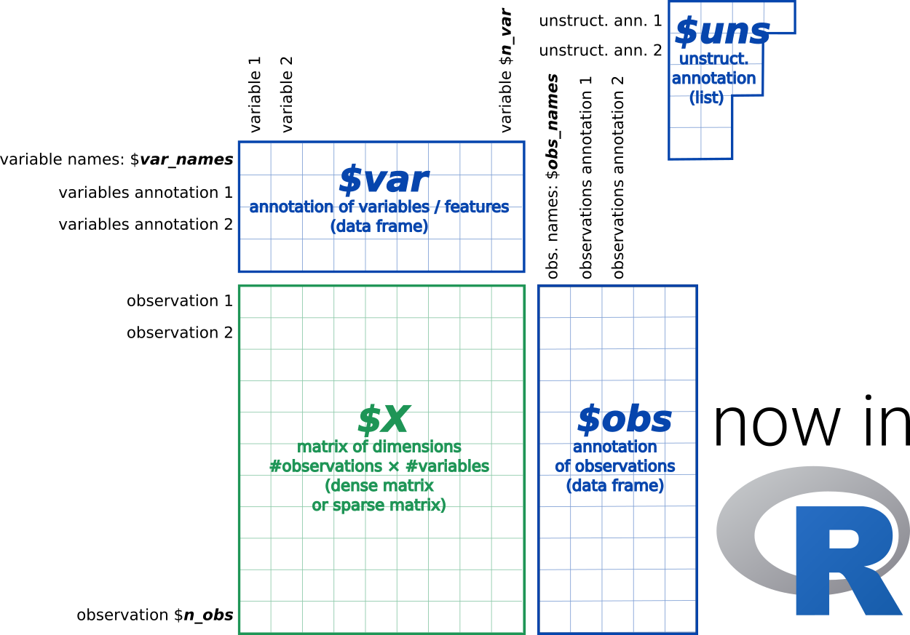

anndata is a commonly used Python package for keeping track of data and learned annotations, and can be used to read from and write to the h5ad file format. It is also the main data format used in the scanpy python package (Wolf, Angerer, and Theis 2018).

However, using scanpy/anndata in R can be a major hassle. When trying to read an h5ad file, R users could approach this problem in one of two ways. A) You could read in the file manually (since it’s an H5 file), but this involves a lot of manual work and a lot of understanding on how the h5ad and H5 file formats work (also, expect major headaches from cryptic hdf5r bugs). Or B) interact with scanpy and anndata through reticulate, but run into issues converting some of the python objects into R.
We recently published anndata on CRAN, which is a reticulate wrapper for the Python package – with some syntax sprinkled on top to make R users feel more at home.
anndata for R is still under active development at github.com/dynverse/anndata. If you encounter any issues, feel free to post an issue on GitHub!
Installation
Installing anndata is not particularly hard. You do need R and Python to be installed. If you don’t have a working installation of Python, you can let reticulate install Miniconda.
# install the R anndata package
install.packages("anndata")
# skip this if you wish to use the local python installation
reticulate::install_miniconda()
# skip this if anndata is already installed
anndata::install_anndata()Getting started
The API of anndata for R is very similar to its Python counterpart. Check out ?anndata for a full list of the functions provided by this package.
AnnData() stores a data matrix X together with annotations of observations obs (obsm, obsp), variables var (varm, varp), and unstructured annotations uns.
Here is an example of how to create an AnnData object with 2 observations and 3 variables.
library(anndata)
ad <- AnnData(
X = matrix(1:6, nrow = 2),
obs = data.frame(group = c("a", "b"), row.names = c("s1", "s2")),
var = data.frame(type = c(1L, 2L, 3L), row.names = c("var1", "var2", "var3")),
layers = list(
spliced = matrix(4:9, nrow = 2),
unspliced = matrix(8:13, nrow = 2)
),
obsm = list(
ones = matrix(rep(1L, 10), nrow = 2),
rand = matrix(rnorm(6), nrow = 2),
zeros = matrix(rep(0L, 10), nrow = 2)
),
varm = list(
ones = matrix(rep(1L, 12), nrow = 3),
rand = matrix(rnorm(6), nrow = 3),
zeros = matrix(rep(0L, 12), nrow = 3)
),
uns = list(
a = 1,
b = data.frame(i = 1:3, j = 4:6, value = runif(3)),
c = list(c.a = 3, c.b = 4)
)
)
ad## AnnData object with n_obs × n_vars = 2 × 3
## obs: 'group'
## var: 'type'
## uns: 'a', 'b', 'c'
## obsm: 'ones', 'rand', 'zeros'
## varm: 'ones', 'rand', 'zeros'
## layers: 'spliced', 'unspliced'You can read the information back out using the $ notation.
ad$X
ad$obs
ad$obsm[["ones"]]
ad$layers[["spliced"]]
ad$uns[["b"]]Using scanpy
A nice side-effect of loading this package is that it is now super easy to interact with scanpy through these AnnData objects.
library(reticulate)
ad$X
sc <- import("scanpy")
sc$pp$normalize_per_cell(ad)
ad$XReading / writing AnnData objects
Read from h5ad format:
read_h5ad("example_formats/pbmc_1k_protein_v3_processed.h5ad")Creating a view
You can use any of the regular R indexing methods to subset the AnnData object. This will result in a ‘View’ of the underlying data without needing to store the same data twice.
view <- ad[, 2]
view## View of AnnData object with n_obs × n_vars = 2 × 1
## obs: 'group', 'n_counts'
## var: 'type'
## uns: 'a', 'b', 'c'
## obsm: 'ones', 'rand', 'zeros'
## varm: 'ones', 'rand', 'zeros'
## layers: 'spliced', 'unspliced'
view$is_view
ad[,c("var1", "var2")]## View of AnnData object with n_obs × n_vars = 2 × 2
## obs: 'group', 'n_counts'
## var: 'type'
## uns: 'a', 'b', 'c'
## obsm: 'ones', 'rand', 'zeros'
## varm: 'ones', 'rand', 'zeros'
## layers: 'spliced', 'unspliced'
ad[-1, ]AnnData as a matrix
The X attribute can be used as an R matrix:
ad$X[,c("var1", "var2")]
ad$X[-1, , drop = FALSE]
ad$X[, 2] <- 10You can access a different layer matrix as follows:
ad$layers["unspliced"]
ad$layers["unspliced"][,c("var2", "var3")]Note on state
If you assign an AnnData object to another variable and modify either, both will be modified:
ad2 <- ad
ad$X[,2] <- 10
list(ad = ad$X, ad2 = ad2$X)## $ad
## var1 var2 var3
## s1 1.166667 10 5.833333
## s2 1.750000 10 5.250000
##
## $ad2
## var1 var2 var3
## s1 1.166667 10 5.833333
## s2 1.750000 10 5.250000This is standard Python behaviour but not R. In order to have two separate copies of an AnnData object, use the $copy() function:
Future work
In some cases, this package may still act more like a Python package rather than an R package. Some more helper functions and helper classes need to be defined in order to fully encapsulate AnnData() objects. Examples are:
ad$chunked_X(1)Following functionality has not been tested:
ad$rename_categories(...)
ad$strings_to_categoricals(...)Currently not implemented are the read_zarr() and ad$write_zarr() functions. I need some example data to test this functionality.
Latest changes
Check out news(package = "anndata") or NEWS.md for a full list of changes.
References
Wolf, F Alexander, Philipp Angerer, and Fabian J Theis. 2018. “SCANPY: Large-Scale Single-Cell Gene Expression Data Analysis.” Genome Biology 19 (February): 15. https://doi.org/10.1186/s13059-017-1382-0.